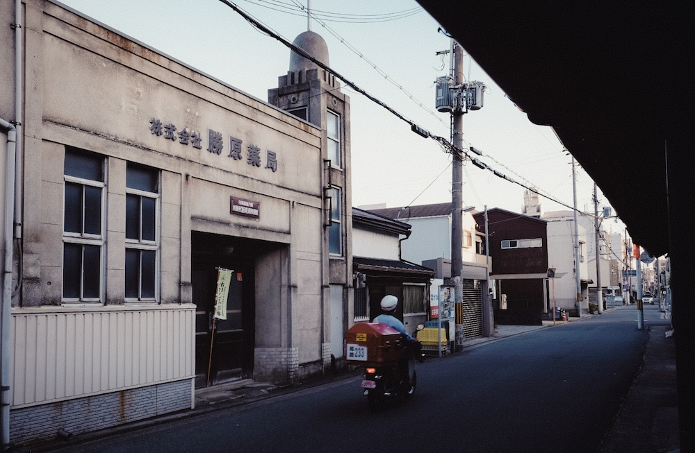
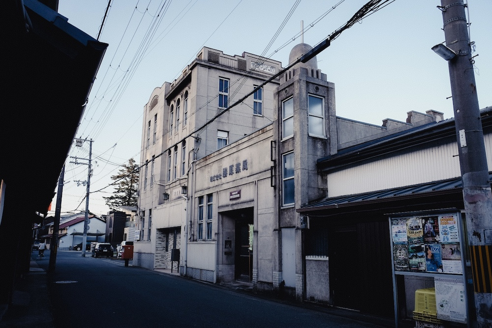
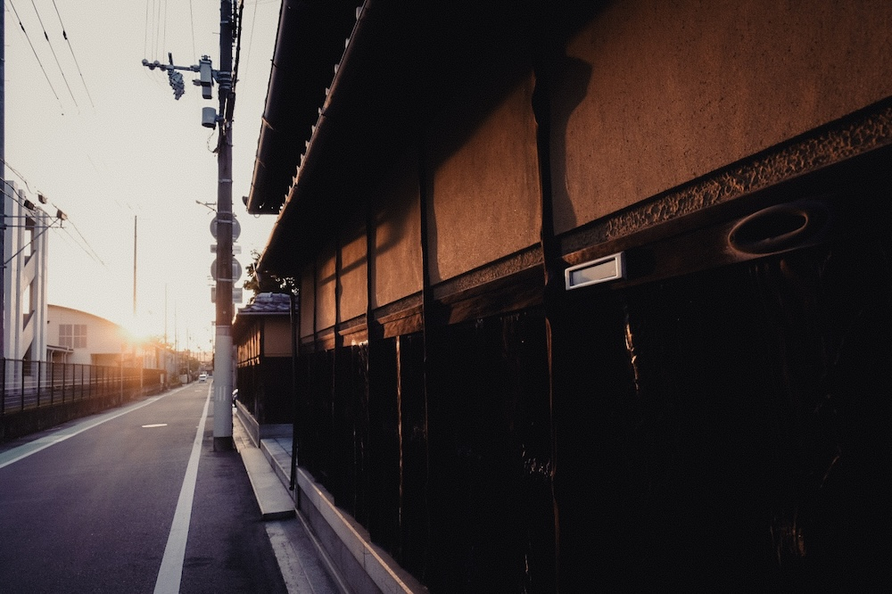
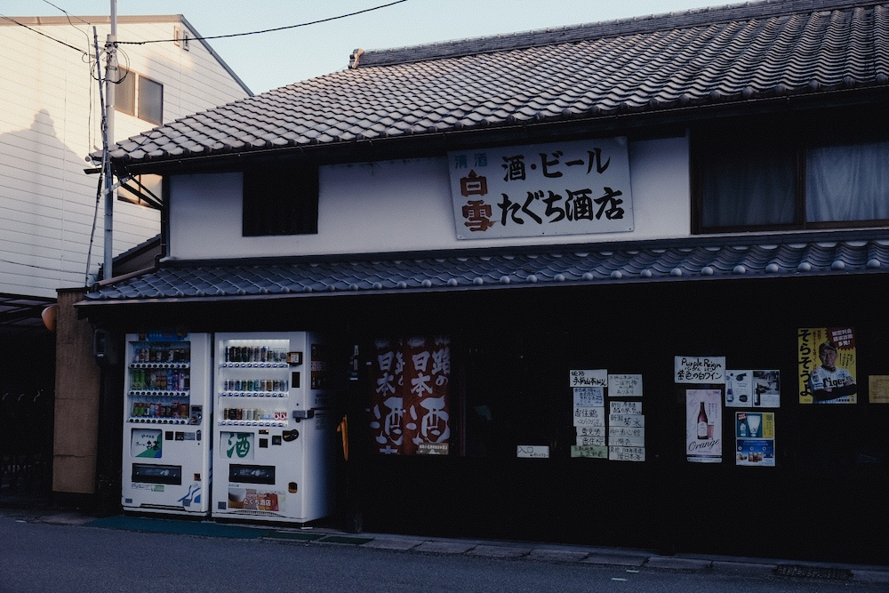

探訪:2024.5, 撮影:Fujifilm X-T2 姫路市、姫路城周辺の町並み。まずJR駅を降りると北口の大通りの正面には大きく姫路城が見え、景観を意識したまちづくりとなっている。 城周辺には米屋町、鍛冶町、鍵町、材木町など城下を思わせる地名が並び、瓦屋根の旧家など歴史的建物が多く現存するほか、明治〜昭和初期にかけての近代洋風建築も多くみられる。
姫路市城下町の風景




▶︎戻る